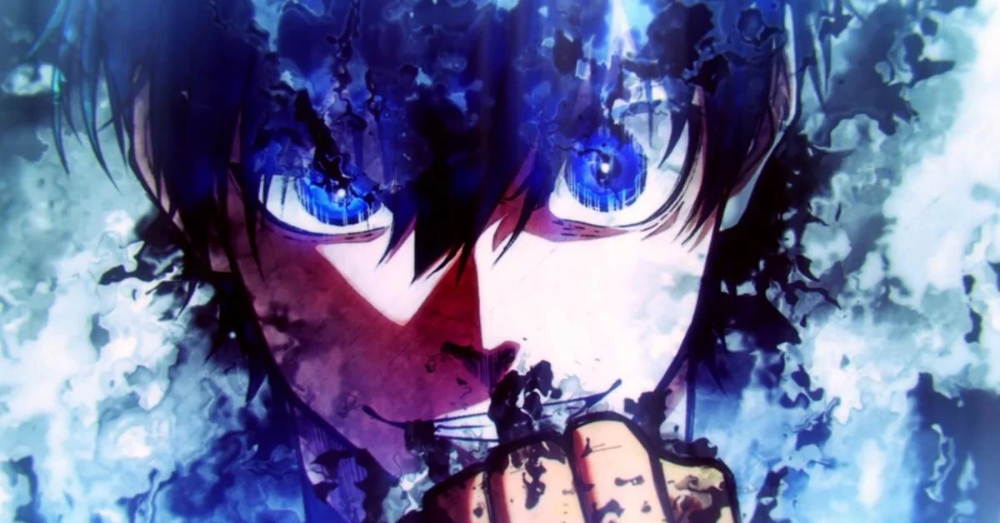

Blue lock es un manga de genero "Spokon" que suele ser un genero deportivo, dentro del cual blue lock es de los mejores spokon con tematica de futbol
La historia trata acerca de Isagi Yoichi, que es un chico de 16 años que tras perder un partido por un mal pase, recibe una carta de la asociacion japonesa de futbol, ya que fue uno de los seleccionados para un nuevo proyecto, uno conocido como "Blue Lock"

El proyecto se trata de una serie de entrenamientos eliminatorios para poder conseguir al mejor delantero de todo el mundo, cosa que nuestro protgonista con un aplio deseo de mejora y desarrollo desea ser, pero los que sean eliminados del proyecto al perder alguna de las fases, no podran ser seleccionados por ningun equipo y no podran volver a jugar nunca mas
Personajes importantes
Pese a que esta el progagonista principal, hay muchos personajes que son igual, o hasta mas importantes que nuestro protagonista en algunos capitulos
Bachira Meguru
Bachira es uno de los personajes secundarios mas importantes dentro de la serie, ya que, ademas de ser el primer amigo que logra Isagi dentro de blue lock, tambien logra una sincronizacion practicamente perfecta con este, logrando pases impresionantes o jugadas que solo se pueden conseguir dado a que se conocen perfectamente el estilo de juego el uno del otro, y saben de que manera va a reaccionar en que momento
Nagi Seishiro
Nagi, al principio es mostrado como un antagonista, ya que en los equipos inciales que fueron elegidos al azar, Nagi estuvo en el equipo contrario a nuestro protagonista Isagi
Nagi posee un dominio del valon a la hora de recibirlo de los mas altos en toda la serie, ya que un pase hacia Nagi practicamente siempre termina en algun gol si no es manejado a tiempo
Barou Shouei
Barou es un antagonista durante toda la obra, incluso luego de unirse al protagonista en la 2 fase de blue lock
Su estilo de juego es un estilo unico en el que el es "el rey de la cancha" y juega unicamente con jugadas que van alrededor de si mismo, este estilo suyo lo mantuvo durante gran parte de la obra, hasta que conocio a Isagi que lo bajo de su pedestal y hasta lo hizo quedar como un inutil durante un partido
Luego de la humillada que le dio Isagi, este casi se rinde con su manera de jugar y se adapta a Isagi, hasta que dentro de su cabeza, le paso la imagen de como seria su vida siendo "Un jugador de apollo", cosa que el no se queria permitir por nada del mundo, asi que evoluciono su estilo de juego en el que el solo pueda contra cualquier otro jugdor que exista

y por el momento hasta aqui llega el reporte acerca de uno de los mejores manga de futbol que hay hasta la actualidad
Las imagenes de Barou quedaron grandes aproposito ya que el personaje lo merece